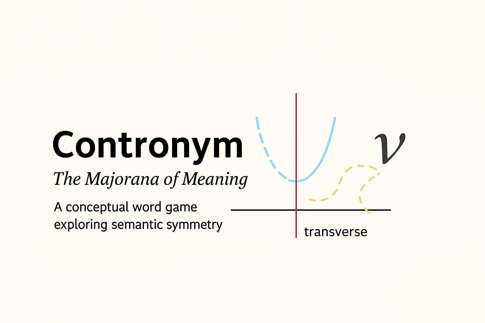
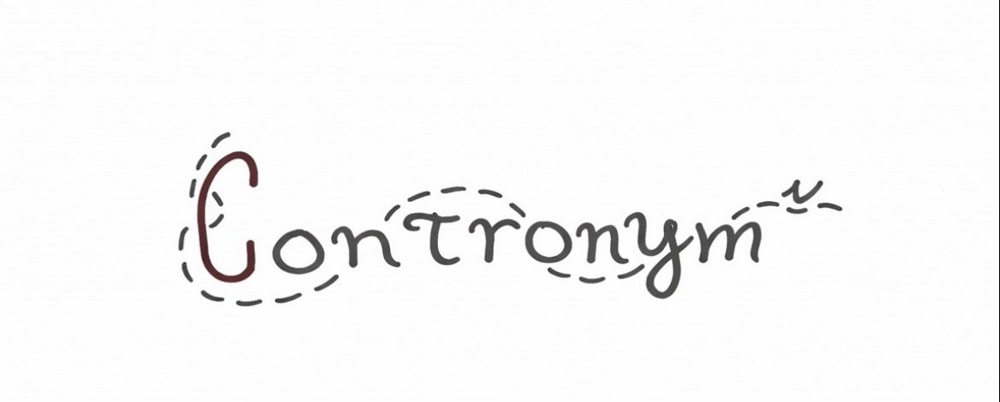

Conjugate
The conjugate dimension represents transformation or semantic inversion: the relationship between meanings that oppose, reverse, or transform one another while belonging to the same system.
PHILOSOPHY + LEARNING MODEL
Contronym treats language as a system of relationships rather than a collection of isolated definitions.
Words can support multiple possible interpretations. Context, syntax, structure, and surrounding evidence determine which relationships become active in a particular expression.

THE CENTRAL PROPOSITION
That distinction turns vocabulary into reasoning. A learner must hold multiple possibilities in mind, compare evidence, recognize relationships, and determine which interpretation best satisfies the context.
THE CONTRONYM PARABOLA
A contronym is a word whose context-dependent meanings can extend into opposing semantic directions.
The Contronym Parabola visualizes those possibilities as branches of the same lexical structure.
The branches separate interpretations while the vertex preserves the identity of the word that generates them.
Context determines charge.

GEOMETRY OF MEANING
The conjugate dimension represents transformation or semantic inversion: the relationship between meanings that oppose, reverse, or transform one another while belonging to the same system.
The transverse dimension represents structural exploration: the expansion of forms, examples, synonyms, contexts, and related expressions within a semantic domain.
The converse relationship connects domains. It allows a structure discovered in one representation to illuminate another through analogy, projection, or translation.
THE LARGER FRAMEWORK
01
Lexical Quantum Gravity is a conceptual model for examining how context changes the landscape of possible meanings.
Rather than treating meaning as a fixed object stored inside a word, it treats interpretation as a structured field of possibilities constrained by linguistic relationships.
02
Quantum Conjugate Dynamics focuses on paired relationships: transformations, oppositions, symmetries, and projections between forms.
The purpose is not to claim that language literally operates according to quantum mechanics, but to borrow useful relational structures for making difficult semantic relationships visible.
03
The Sentence Standard Model extends relational thinking from individual words to complete statements.
Syntax, context, grammatical role, semantic function, and sentence structure become interacting parts of a system rather than disconnected rules that must simply be memorized.
WHY THE PUZZLES MATTER
Contronym Cards and PAT Learning Lab puzzles turn the underlying philosophy into repeated practice with vocabulary, reading, inference, evidence, linguistic structure, and critical thinking.
Students learn that knowing a dictionary definition is not enough. Meaning must be resolved from surrounding evidence.
The puzzles exercise skills used throughout college-readiness and standardized assessments: words in context, inference, evidence evaluation, structural relationships, ambiguity, and elimination of plausible but unsupported interpretations.
Learners practice asking what a passage permits us to conclude, rather than merely recalling what individual words usually mean.
Synonyms, antonyms, morphology, etymology, syntax, and semantic shifts become parts of connected meaning networks rather than isolated vocabulary lists.
Every puzzle requires the learner to maintain competing possibilities, identify evidence, test interpretations, and resolve ambiguity.
The same habit of relational thinking can transfer to mathematics, science, argumentation, problem solving, and unfamiliar academic material.
FROM PUZZLE TO ASSESSMENT
“What does this word mean?”
“What could this word mean, what evidence distinguishes those possibilities, and why does this context select one rather than another?”
That shift transforms vocabulary practice into inference, comparison, evidence evaluation, semantic flexibility, and critical reading.
THE LEARNING LOOP
Begin with incomplete or competing semantic possibilities.
Each clue adds evidence without immediately giving away the final relationship.
Multiple possible meanings remain active while the learner searches for the shared structure.
The word is discovered at the point where the semantic evidence converges.
LEARN THE SYSTEM BY USING IT
Put contextual reasoning, vocabulary, semantic relationships, and critical thinking into practice with the Contronym puzzles.
Play Contronym →